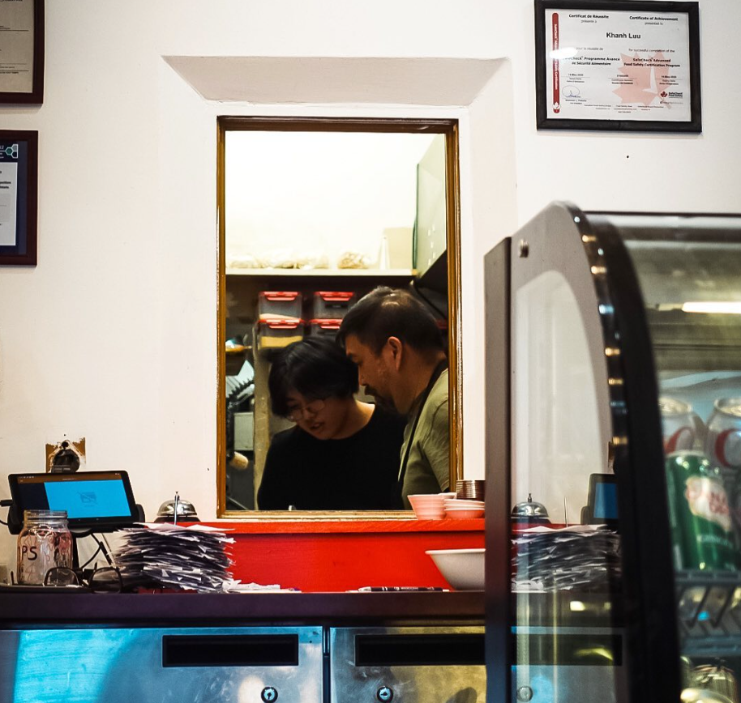
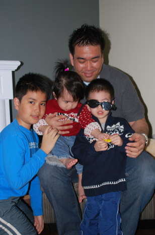
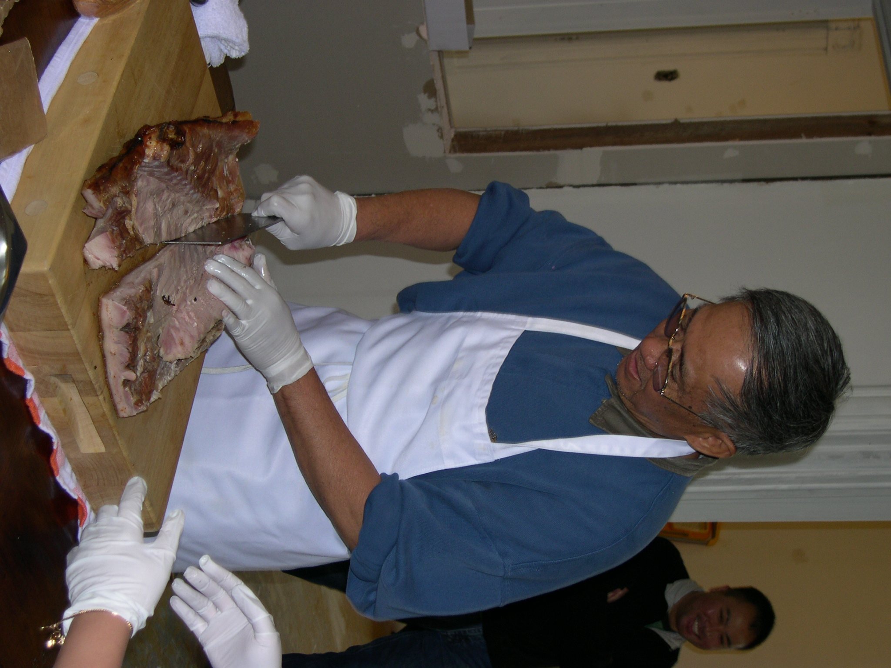

| Website | Products |
|---|---|
| Costco | Meats & beverages |
| BALE | Banh mi |
| Kowloon | All Other Food Products |
| SINCO | All kitchen Materials |
Crazy Pho Pho
About us
Who are we?
Our journey began in 1979 when my grandparents, Dai Van Luu and Thu Thi Luu opened Little Saigon, Ottawa's first Vietnamese restaurant. Inspired by their legacy, my father, Khanh Luu introduced Crazy Pho You in 2019. After four years of invaluable experience from working there, I embarked on my venture, Crazy Pho Pho, in 2023, honoring family traditions and offering authentic Vietnamese cuisine.
Keeping it Seasonal, Fresh and Local
Quality is our priority. We source fresh ingredients from local farmers' markets, ensuring you enjoy the best of every season. Mrs. Luu Thi Thu continues to craft her signature pork spring rolls. Don't miss out on Grandma's spring rolls when you dine with us.
  